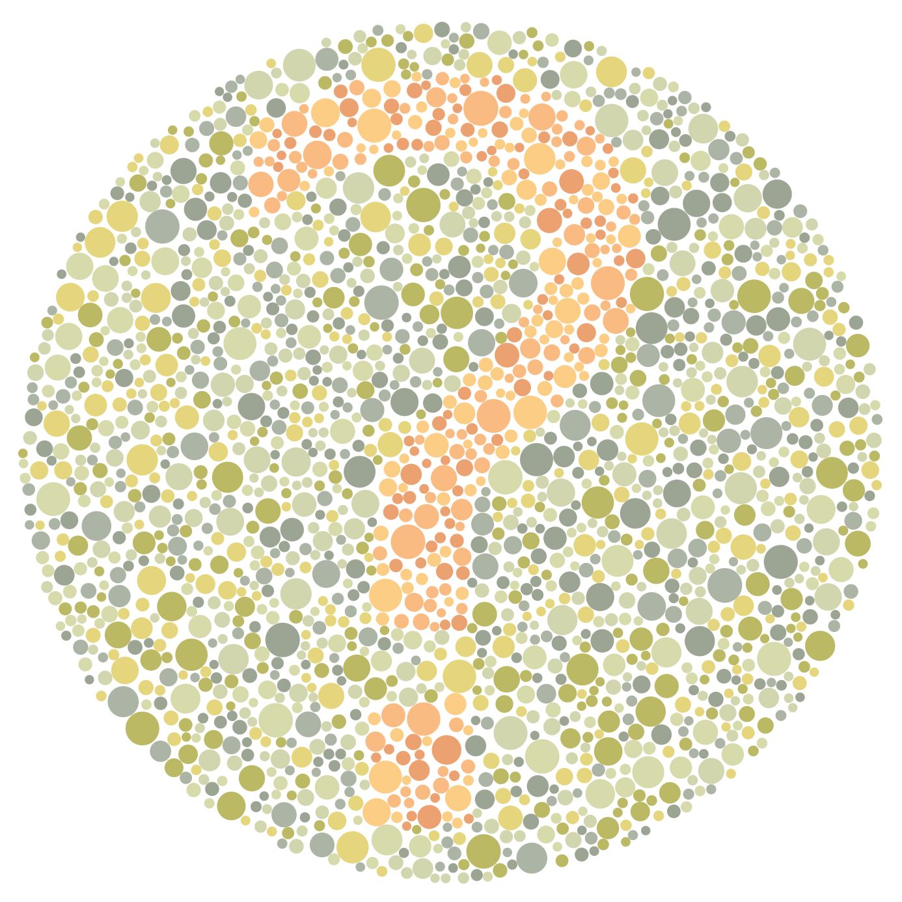
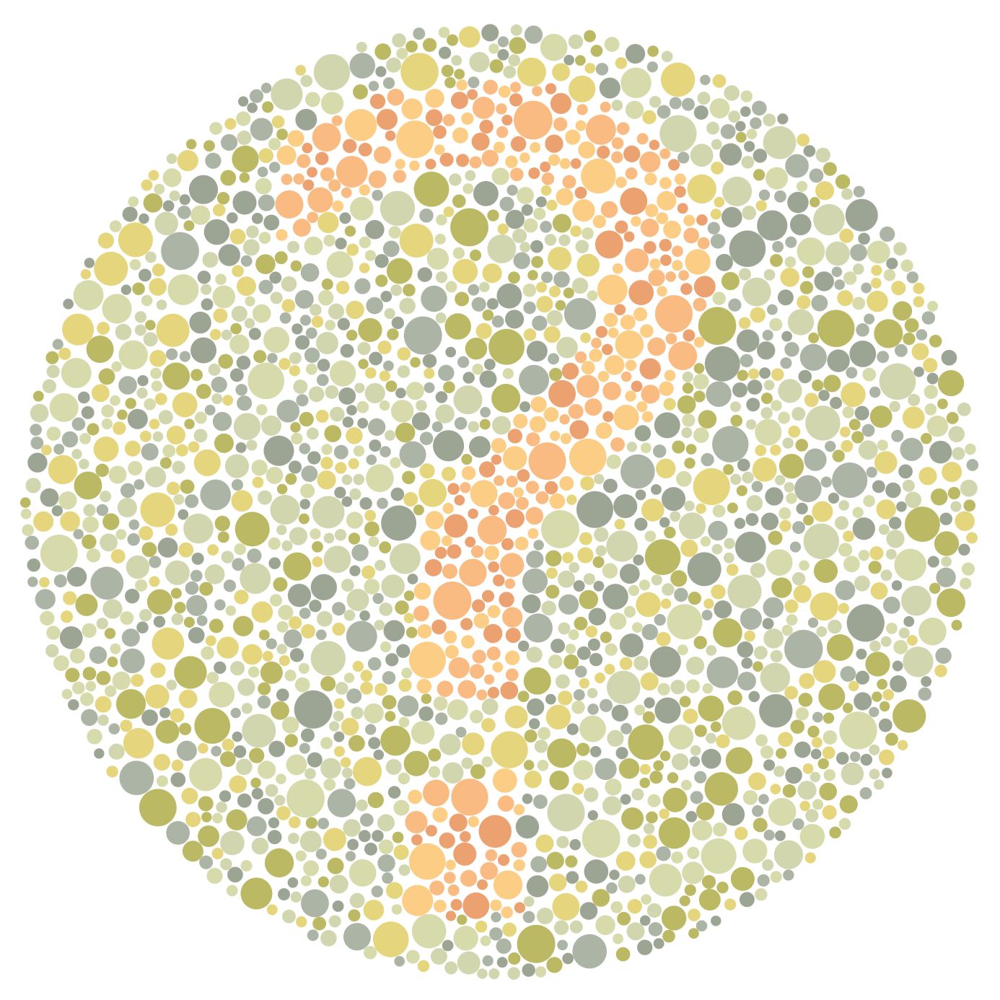

Kavias Lai (Kaz)
Something personal is that I have a deep passion in Japanese music and culture, which inspired me to participate in an exchange program in Japan during my Spring and Summer semester last year. Professionally, I am a senior majoring in IM&T and concentrating in web development and currently looking for a full-time job! Something peculiar about me is that, I am colorblind.
 
